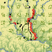

Александр Александрович Шенников
Червленый Яр
Исследование по истории и географии Среднего Подонья в XIV √ XVI вв.
|  | Схематическая карта левобережной части Среднего Подонья (показаны объекты, имеющие отношение к истории Червленого Яра) (156 KB) |
 Червленый Яр
Червленый Яр 
 Введение
Введение - Глава 1. Червленый Яр в
XIV в.
- 1. Червленый Яр и район Сарая в 1400 √ 1480 гг.
- 2. Район Червленого Яра после разгрома Сарая
- 3. Общая ситуация в районе Червленого Яра
- 4. Рассказ о переселении червленоярцев на Терек
- 5. Местоположение ╚волости Червленый Яр╩
- 6. Червленый Яр и рязанские казаки
- 7. Дата переселения червленоярцев
- 8. Причина переселения червленоярцев
- 9. Сосуществование русских и татар в Червленом Яру
- 10. Оседлость и неоседлость (основные понятия и термины)
- 11. Оседлость и неоседлость у золотоордынских татар
- 12. Географические и хозяйственные основы сосуществования русских и татар в Червленом Яру
Подготовка электронного текста книги завершена в апреле 2008 г.
|
|
06/10/20 - 03:43 |